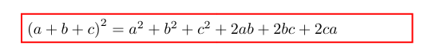
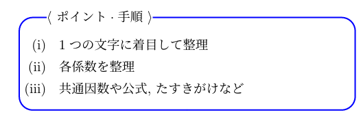
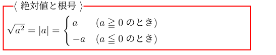
原則 $基本対称式x+y, xyで表す！$
(2) $x^{2} + y^{2} = {(x+y)}^{2}-2xy$
(4) $x^{3} + y^{3} = {(x+y)}^{3}-3xy(x+y)$
または $x^{3} + y^{3} = (x+y)(x^{2} - xy+y^{2})$
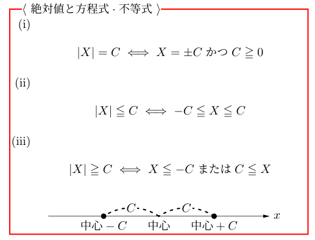
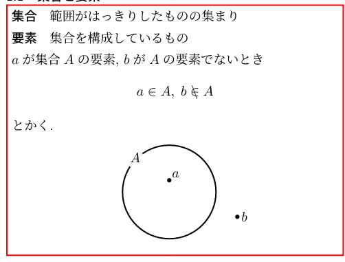
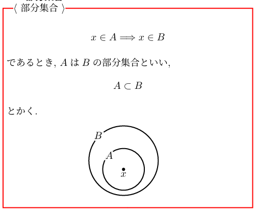
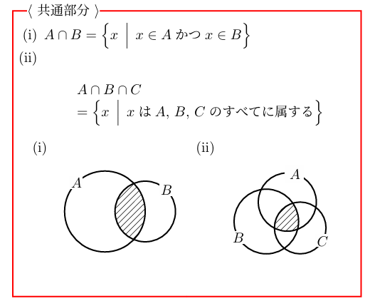
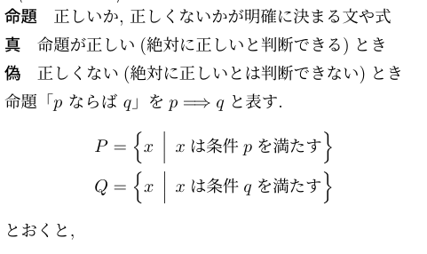
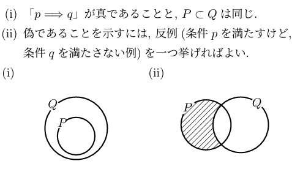
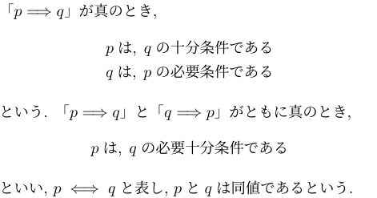
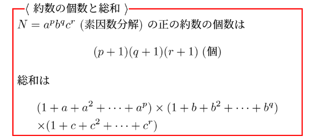
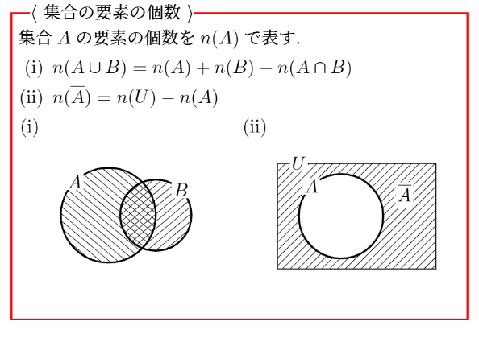
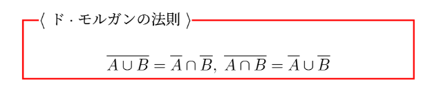
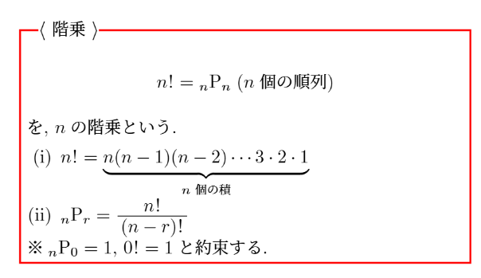
制限のある部分から考えるとよい！
(1) 両端の子音から考える！隣り合わせは一つの固まりと考える！
(2) 一番左の千の位は0以外！
円順列は、
一つを固定して考えるとよい！
1冊目の行先はA, B, Cの3通り！
2冊目の行先はA, B, Cの3通り！
・・・・・
5冊目の行先はA, B, Cの3通り！
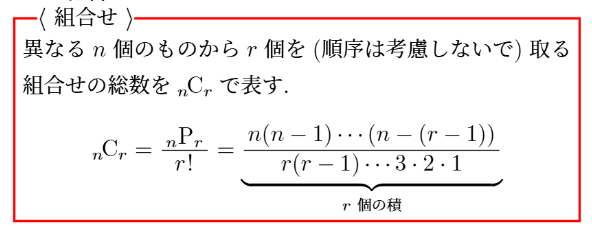
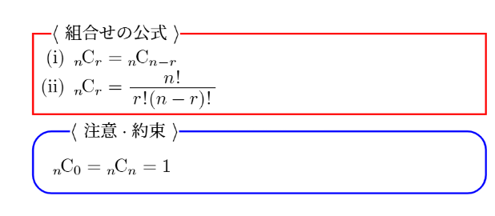
アイウ$10人から4人を選ぶ！$
エオ$男子4人中2人選び, 女子6人中2人選ぶ！$
カキク$全体から男子1人, 男子0人の場合を引くほうが楽（補集合=余事象）$
アイ$8個の頂点から3点を選ぶ！$
ウエ$1辺を固定すると残りの頂点の選び方は4個！$
オカ$全体から2辺を共有する場合と、1辺だけを共有する場合を引くほうが楽（補集合=余事象）$
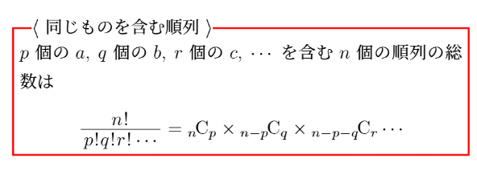
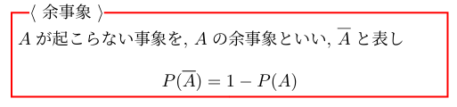
アイウエ: 「少なくとも～」$\Longrightarrow 余事象！$
オカ: 「場合分けが多い」$\Longrightarrow 余事象！$